During a forbidden excursion to see the surface world, a goldfish princess encounters a human boy named Sosuke, who gives her the name Ponyo. Ponyo longs to become human, and as her friendship with Sosuke grows, she becomes more humanlike. Ponyo's father brings her back to their ocean kingdom, but so strong is Ponyo's wish to live on the surface that she breaks free, and in the process, spills a collection of magical elixirs that endanger Sosuke's village.
2008
Ponyo
Other Movies
 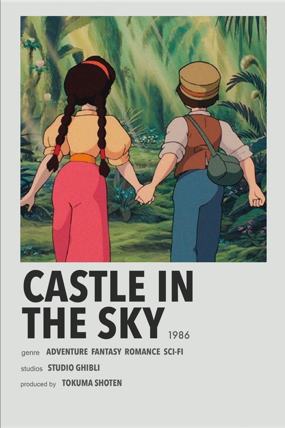
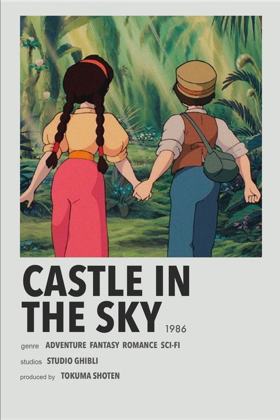
 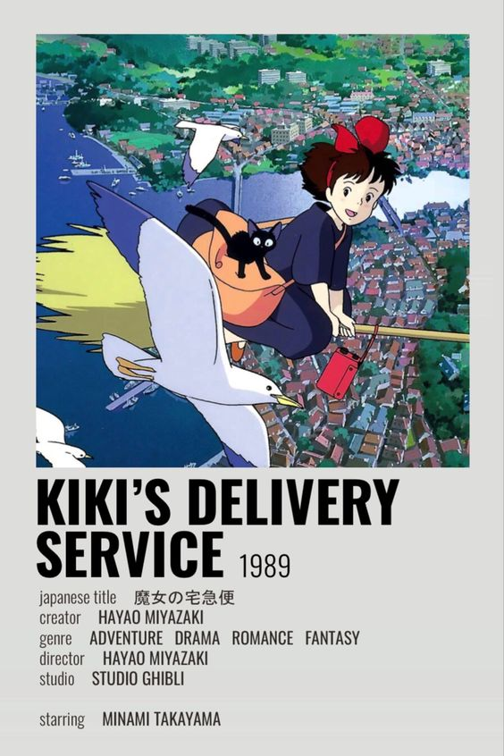
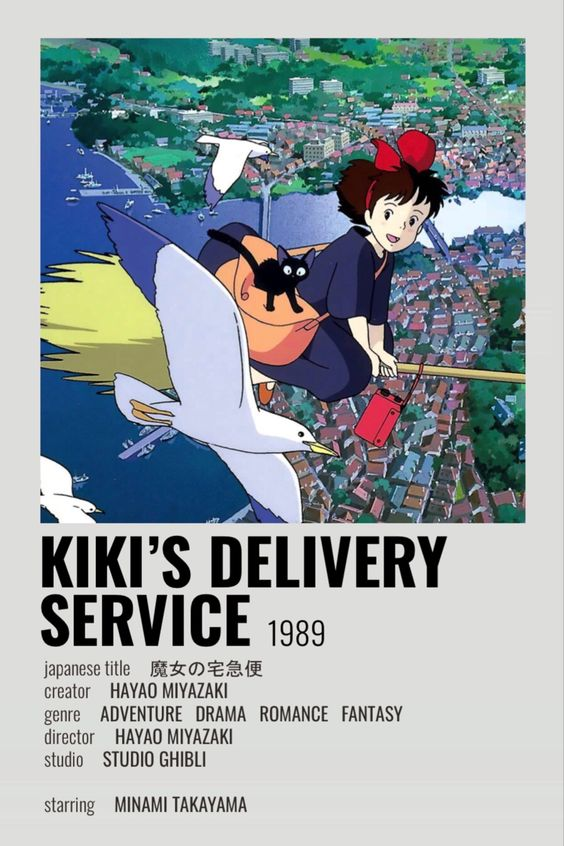
 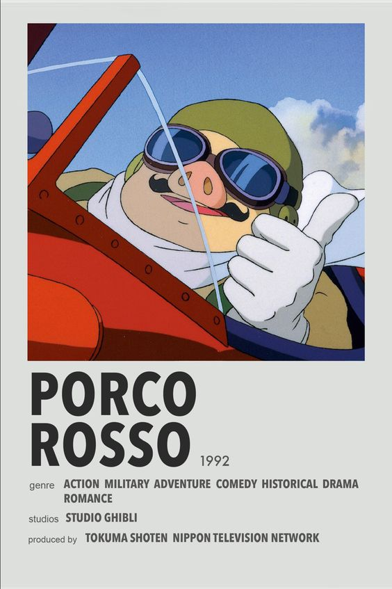
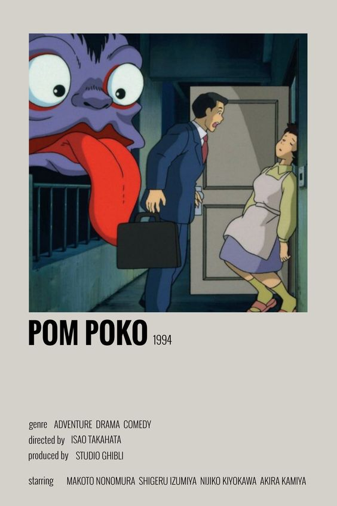
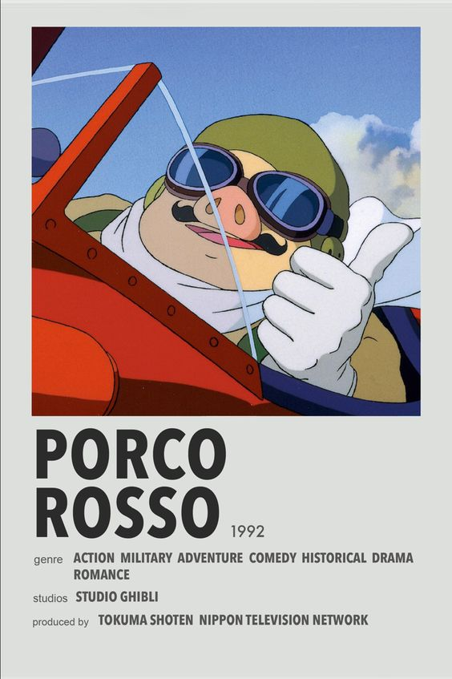
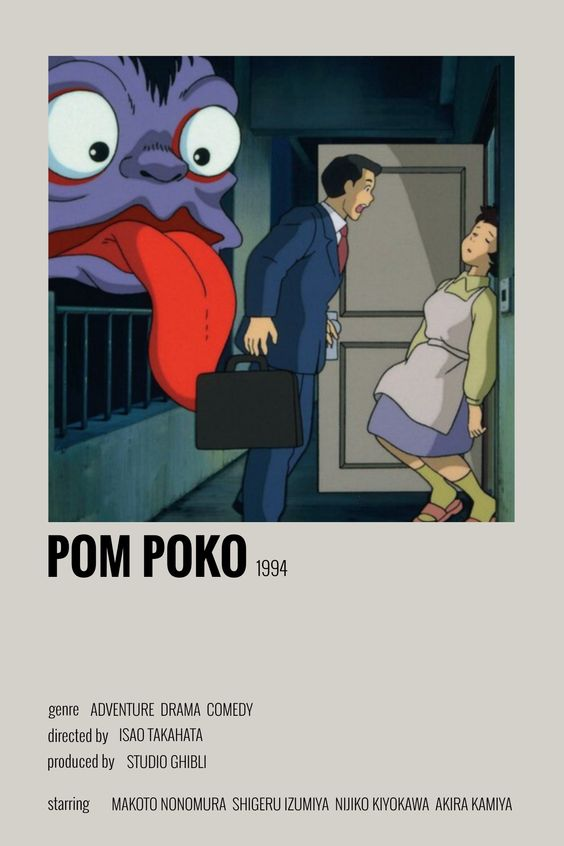

 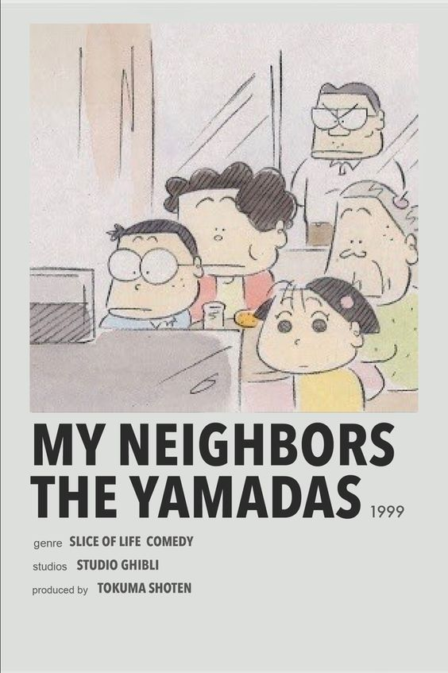
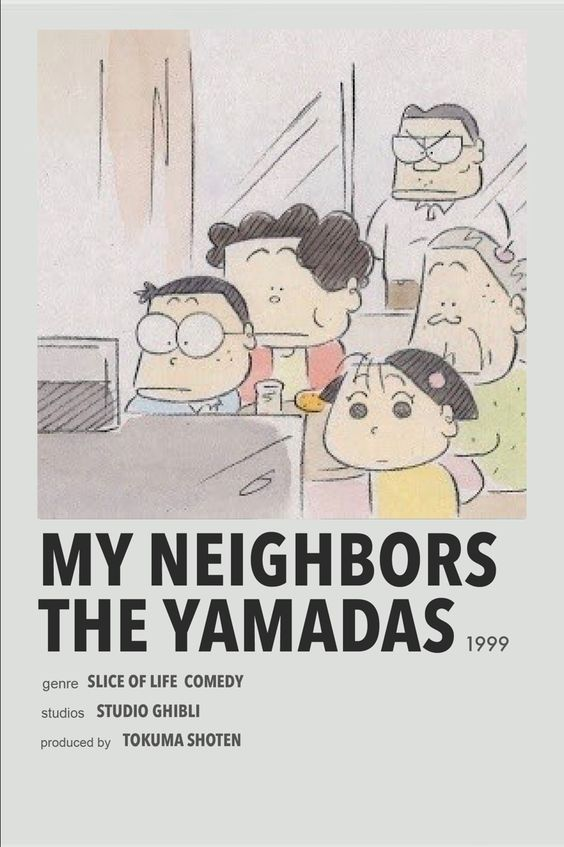

 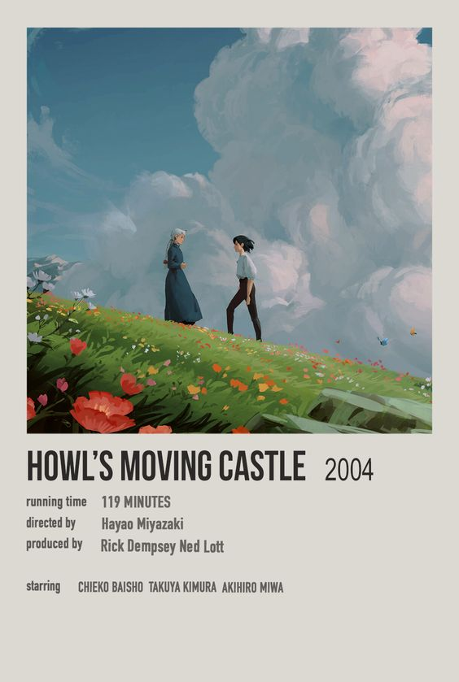
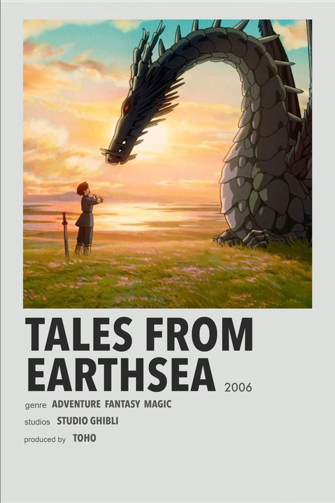
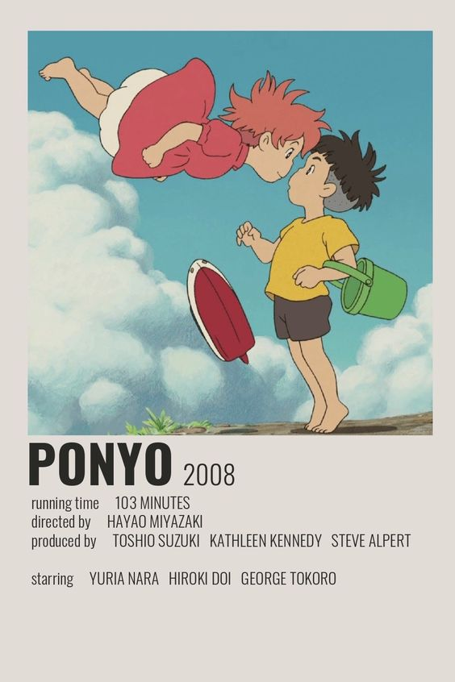
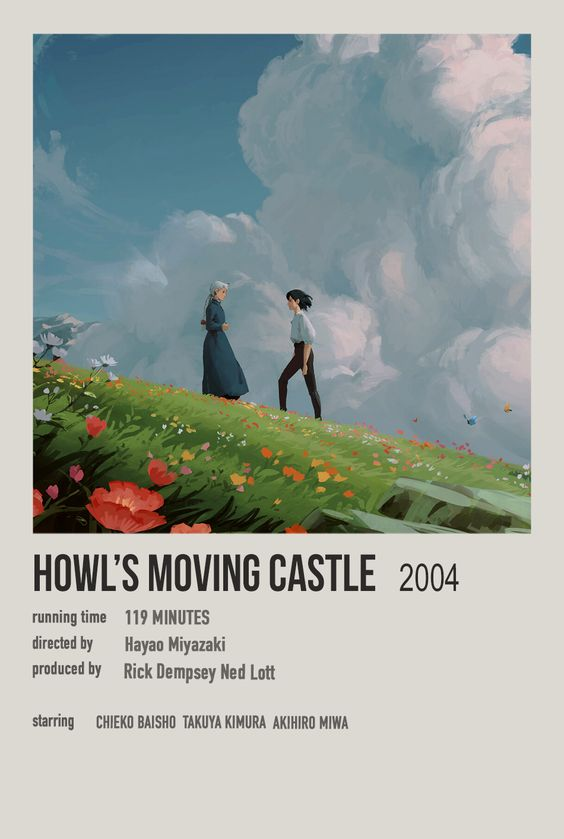
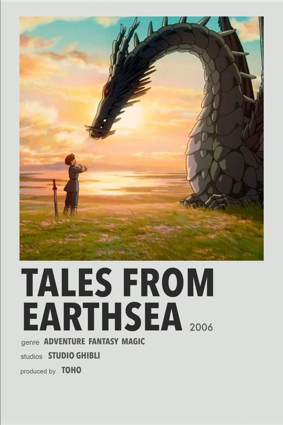
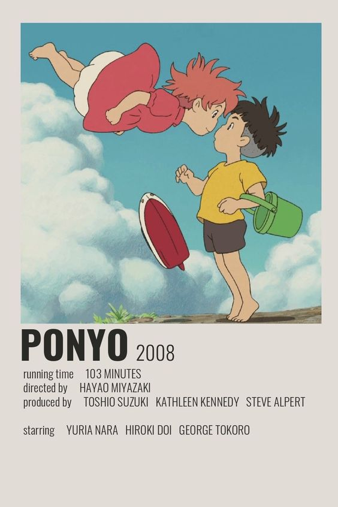


About Studio Ghibli
Studio Ghibli was founded in 1985 by animated film directors Isao Takahata and Hayao Miyazaki, and has produced twenty-two feature-length films. Most Studio Ghibli films ranked number one at the box office in Japan in the year in which they were released. SPIRITED AWAY, directed by Hayao Miyazaki and released in 2001, is the all-time highest grossing film in Japan, earning over 30 billion yen at the box office.
Studio Ghibli films have garnered numerous awards and critical acclaim from film critics and animation specialists around the world. SPIRITED AWAY was awarded the Golden Bear as the Best Feature Film at the 2002 Berlin International Film Festival and won the 2002 Academy Award for Best Animated Feature Film. In October 2001, Studio Ghibli, in conjunction with The Tokuma Memorial Cultural Foundation for Animation, founded the Ghibli Museum, Mitaka, designed by Hayao Miyazaki.